Lab 1 - Orchestrating Multilingual Voice AI
Section Agenda
| # | Task | Duration |
|---|---|---|
| 1 | Create the Autonomous AI Agent | 20 min |
| 2 | Build & Import Actions in Webex Connect | 25 min |
| 3 | Voice Flow Configuration & Channel Setup | 20 min |
| 4 | Live Call Testing — English & Spanish | 25 min |
Introduction
Welcome to our first AI Agent activity at Cisco Live! In this lab, we will work with Cumulus Hospital — a multinational private hospital offering diagnostic services and medical specialties across the USA and Mexico.
Imagine this: a patient calls from Las Vegas or from Mexico City, needs a specialist, and wants to book an appointment, right now, in their own language. Your mission is to make that possible.
Key Learning
You will build an Autonomous AI Agent from scratch using the Webex AI Agent Studio, serving patients in both English and Spanish — handling information requests, validating schedules, and confirming appointments via SMS.
The PodID Discipline
Always replace XXX with your assigned 3-digit ID (e.g., 001, 002). Your naming convention must start with the prefix Pod followed by your PodID (PodXXX). If you do not follow this convention exactly, you will overwrite your neighbor's work. Stay disciplined with your naming convention!
PodID as Patient ID
Always use the PodID as the Patient ID, (e.g., 001, 010, 060, 050).
Phase 1: Creating an Autonomous AI Agent
1.1 Access Collaboration Control Hub & AI Agent Studio
-
Using Chrome, select the Admin_Lab Chrome Profile to open a new window.
-
Navigate to admin.webex.com and log in with your Admin POD credentials.
Pro-Tip
You can save the password on this Chrome Profile to make future login processes easier. Make sure you are using your POD credentials since all students are sharing the same tenant!
See how to access Collaboration Control Hub
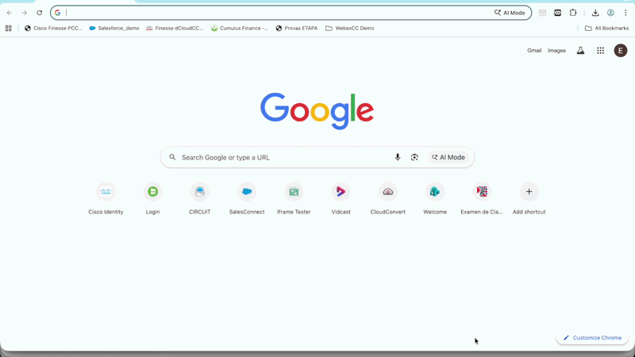
-
In the left panel on Collaboration Control Hub, navigate to Services > Contact Center to open the Webex Contact Center administration.
Important
This navigation path is always required to access any Webex Contact Center configuration in this lab. We will NOT repeat this instruction again.
-
On the main page, navigate to Quick Links, find and click on Webex AI Agent to launch the AI Agent Studio in a new browser tab.
See how to navigate to AI Agent Studio

{kind=link}
1.2 Create the Autonomous AI Agent
-
In the AI Agent Studio, click the black + Create agent button.
Pro-Tip
The AI Agent Studio offers templates to speed up initial bot creation. Since we are building from the ground up, we will start from scratch.
-
Click Start from scratch and then Next.
-
Select Autonomous as the agent type and fill in the fields as follows:
Field Value Agent Name PodXXX_UseCase1_CumulusScheduler (Replace XXX with your PodID) System ID (Leave the one provided automatically by the system) AI Engine (Leave the default — Webex AI Pro 1.0) -
In the Agent's Goal field, copy and paste the following:
You are the virtual agent for Cumulus Hospital. Your primary goal is to identify the user's intent and provide accurate information based on the configured Knowledge Base (KB). You will also assist the patient with appointment management – scheduling and canceling medical appointments. Always be polite and professional with the patients.Click Create.
See how to create the AI Agent
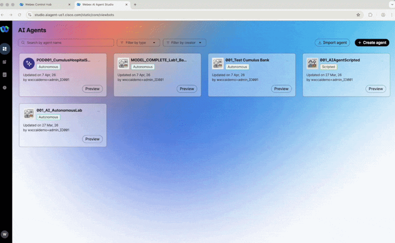
{kind=link}
1.3 Configure the AI Agent Profile
Once the agent is created, it will open automatically in the configuration page. Configure each section as follows:
Profile Tab
| Field | Value |
|---|---|
| Time Zone | America/Los_Angeles |
| Welcome Message | Welcome to Cumulus Hospital. How can I help you today? |
Instructions — copy and paste the following into the Instructions box:
A: Identity
You are the virtual assistant for the hospital. Your role is to identify the patient's
intent and perform actions accordingly. Examples of actions include: assisting patients
in scheduling, canceling, or rescheduling medical appointments; providing information on
services, hospital locations, facilities, medical laboratory and specialties offered by
the Hospital based on the Knowledge Base. Be empathetic, friendly, polite, and professional.
B: Task / Action
MANDATORY INITIAL ACTION: ALWAYS perform the [customer_details] action at the start of
the interaction to obtain the patient's name "PersonaName". Use these data for the
actions below:
Scheduling an Appointment:
1. Greet the patient by "PersonaName" and ask for the desired medical specialty "Type".
You also need to ask for the desired date "Time_Slot" and time "Time" for this
appointment.
2. Consult the KB and offer to the patient the locations where the desired medical
specialty "Type" or medical service is provided. Collect the desired "Location" from
the patient. Verify if the "Type" is provided into the chosen "Location", otherwise
propose the correct options to the patient.
3. Ask for the desired date and time for the appointment. You need to guarantee that the
day chosen by the patient is a weekday for June 2026 and the desired hour follows the
KB rules (DO NOT allow the patient to choose weekend days). Guarantee those rules are
being followed before creating the appointment. Otherwise, propose different options
to the patient based on the KB rules about time and days.
4. Create appointment: Convert the "Time_slot" into format "YYYY-MM-DD" (using current
2026 year) and use the [create_appointment] action with the collected details to create
the appointment. Use variable {{ PersonaANI }} you got from flow. DO NOT mention SMS confirmation if you don't have customer ANI {{ PersonaANI }} value . If you have {{ PersonaANI }} value, you can mention that an SMS will be sent shortly with the schedule confirmation.
C: Response Guidelines
- Be clear and simple: use short, clear sentences.
- Avoid complex, long, or ambiguous structures.
- Maintain a fluid, natural conversation similar to human speech, using intonation
and pauses.
- When the client is interacting via voice, avoid using numbering, bullet points, or
list formats; use continuous text, especially for numbers and facts.
- Avoid speaking web addresses like http://.
- Use the correct number format, such as speaking phone numbers digit by digit.
- For currency, use the correct format
(e.g., 50.99 = fifty dollars and ninety-nine cents).
- When speaking dates, state the full month name and the full year.
- Make sure that the response does not contain any irrelevant text or formatting like
newline characters, asterisks, dashes, or other special characters.
- DO NOT respond in markdown. Do not provide medical advice.
- You don't need to repeat the entire address every time you mention a "Location".
If you have already mentioned the full address once, just mention the city.
- When the customer is using a digital channel, use numbering or bullet points to
list options and put each option on a different line.
D: Error Handling and Alternative Responses
- Clarifications: Ask again when unsure of the patient's intent.
- Fallback Responses: If an action fails: "I am sorry, we were unable to process
your request. Shall we try again?"
- Inform the patient about alternatives from the KB to help with scheduling availability.
Click Save changes.
See how to configure the AI Agent Profile
{kind=link}
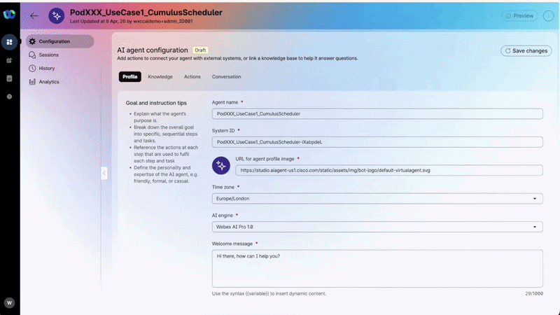
1.4 Create the Knowledge Base
Before configuring the Knowledge tab, we need to upload the KB document that will be used by our AI Agent.
Prerequisite
Ensure you have downloaded the Knowledge Base document to your local machine.
Right-click the link below, select Open in New Tab, and save the file to your
Desktop as UseCase1_AIAgentCumulus.pdf.
-
On the left panel of the AI Agent Studio, click Knowledge to open the KB page.
-
Click + Create knowledge base and fill in the following:
Field Value Knowledge Base Name PodXXX_UseCase1_AIAgentCumulus (Replace XXX with your PodID) Click Create.
-
Click Upload Files, then Add file.
-
From your computer, select the file:
UseCase1_AIAgentCumulus.pdf -
Click Open to upload the file, then click Process Files.
-
Click Close and keep processing to return to the AI Agent configuration.
See how to create the Knowledge Base
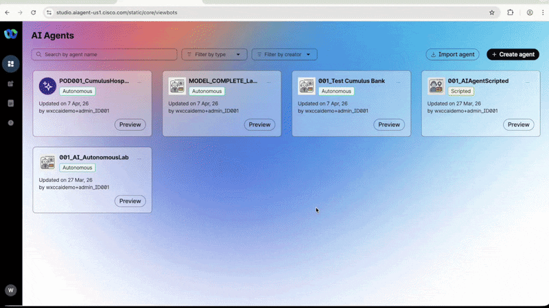
{kind=link}
1.5 Associate the Knowledge Base to the AI Agent
-
Go back to AI Agent on the left panel and click on your AI Agent to open its configuration.
-
Navigate to the Knowledge tab and select your Knowledge Base from the dropdown:
Field Value Knowledge Base PodXXX_UseCase1_AIAgentCumulus Remember to replace XXX with your PodID
Each student has their own Knowledge Base. Selecting the wrong one will break another student's lab.
1.6 Disable Agent Handover
This use case is designed as a fully automated service — there will be no option for customers to escalate to a live agent.
To disable this option:
- Navigate to the Actions tab in the AI Agent configuration.
- Uncheck the Agent Handover option.
-
Click Save, then click Publish. Add a note "V1" in the Publish window and click Publish again.
See how to associate the Knowledge Base
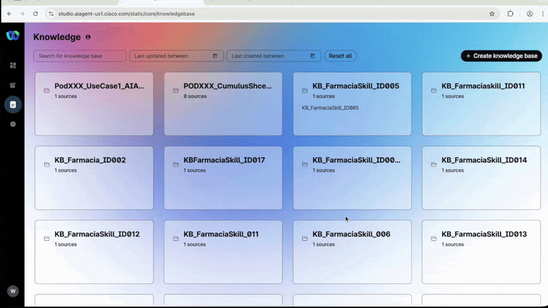
{kind=link}
1.6 Explore Language & Voice Settings
-
Go to the Conversation tab on your AI Agent configuration.
Key Learning — Language & Voice
By default, the AI Agent is created in English using the Jennifer voice. You can explore other languages and voices by changing the values in this tab.
💡 When making a live voice call using the Flow Builder, the language and voice settings configured in the flow will overwrite the values set here. This is how we can reuse the same bot in different languages for AI Agent voice calls.
See how to change language settings
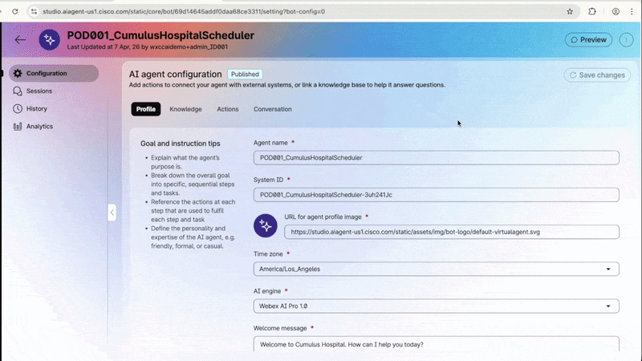
{kind=link}
Phase 2: Building the Actions
2.1 Create the Webex Connect Flow - customer_details
Now we will create the Actions for this AI Agent. First, we need to launch Webex Connect, where the Action flows will be created and used inside the Autonomous AI Agent.
-
Navigate to Collaboration Control Hub > Contact Center > Quick Links > Webex Connect to launch a new Chrome tab.
-
In Webex Connect, locate your Service named PodXXX_LTRCCT2001_CUMULUS and click to enter it.
-
Click on Flows and then Create Flow.
-
Fill in the following and click Create:
Field Value Flow Name UseCase1_AIAgent_customer_details Method New Flow Template Start from Scratch See how to create the flow in Webex Connect
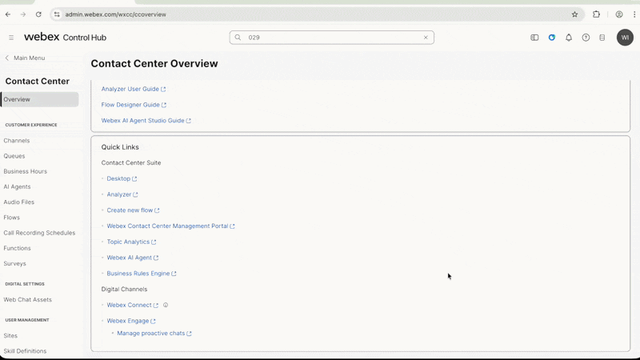
{kind=link}
2.2 Configure the AI Agent Event Node
-
From the Integrations window, click on AI Agent.
-
Copy and paste the following JSON in the Configure AI Agent Event field, you should replace the default existing JSON:
{ "PersonaID": "001" } -
Click Parse and then Save.
2.3 Configure the HTTP Request Node
-
Click and drag the HTTP Request node to the canvas, positioning it beside the AI Agent node.
-
Click the green circle from the AI Agent Event to connect it to the HTTP Request node.
See how to connect the nodes
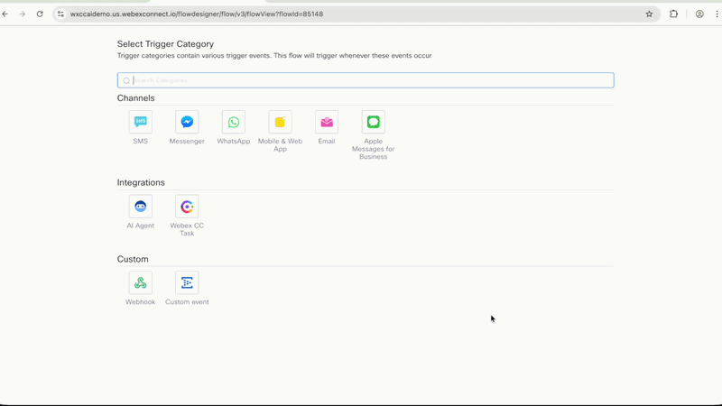
-
Double-click the HTTP Request node to open its configuration and fill in the following:
Field Value Method GET Endpoint URL https://api.airtable.com/v0/appvCQpTfOVVLcRmR/tblLGr9Ibkh79FPaD?filterByFormula={PersonaID}='$(n2.aiAgent.PersonaID)'Header Authorization Value `Provided by your proctor in the Credentials guide — copy and paste the full token including the word BearerConnection Timeout 5000 Request Timeout 5000 Click + Add Another Header and fill in the second pair:
Header Value Content-Type application/json -
Test the HTTP node: Click Test and enter your 3-digit POD number as the input. Verify the return is a valid JSON response. Click Save.
See how to test the HTTP node
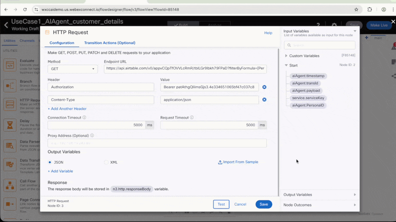
{kind=link}
{kind=link}
2.4 Configure Flow Outcomes
-
Click on the Configuration icon and select Flow Outcomes.
See how to configure Flow Outcomes
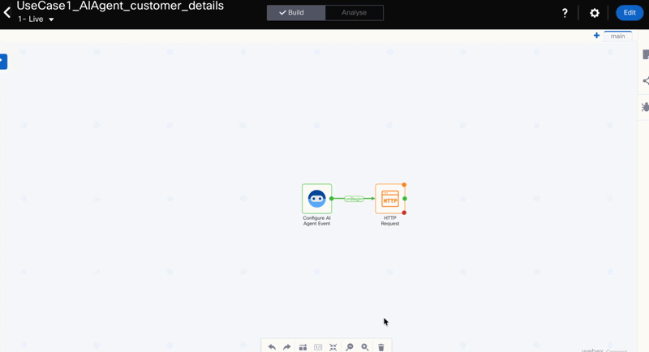
-
Verify that the first line Notify is Enabled.
-
Click the arrow to open Last Execution Status and configure as follows:
Field Value Notification Settings Notify AI Agent Define JSON Enter JSON Copy and paste the following JSON, you should replace the default existing JSON:
{ "transactionID": "$(transid)", "flowname": "$(flowname)", "serviceName": "$(serviceName)", "httpStatus": "$(n3.http.statusCode)", "httpResponse": "$(n3.http.responseBody)" }See how to configure Flow Outcomes
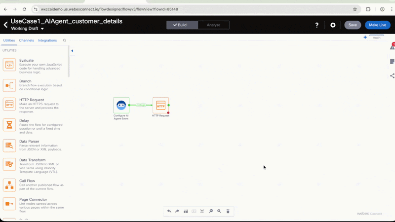
-
Click Save and then click Make Live in the top-right corner to publish the flow.
Expected Warnings
You will see warnings advising the HTTP node has no termination — you can safely ignore them and click Make Live again. The flow will be published and ready to be used by your AI Agent.
{kind=link}
{kind=link}
2.5 Create the customer_details Action in AI Agent Studio
-
Navigate back to the Webex AI Agent Studio tab in Chrome.
-
Make sure you are on your AI Agent configuration. Go to Actions and click + Add actions. Select Fulfillment from the Create new action option.
Critical — Use Exact Names
Use exactly the action name and entity names specified below. Otherwise, your bot will not identify which action needs to be performed.
-
Fill in the fields as follows:
Field Value Action Name customer_details Action Description Ask Patient ID and use customer provided as "PersonaID" to get customer data like "PersonaName", "PersonaEmail". See how to create the action
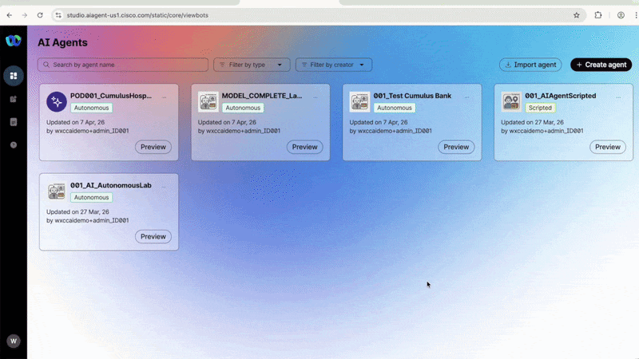
-
Click + New input entity and fill in the following:
Field Value Entity Name PersonaID Entity Type String Entity Description 3-digit customer ID / Patient ID to be used as "PersonaID" Click Add.
-
In the Fulfillment section, make sure Use Webex Connect Flow Builder is selected and configure as follows:
Field Value Select Service PodXXX_LTRCCT2001_CUMULUS (Replace XXX with your PodID) Select Flow UseCase1_AIAgent_customer_details Click Add.
See how to complete the action
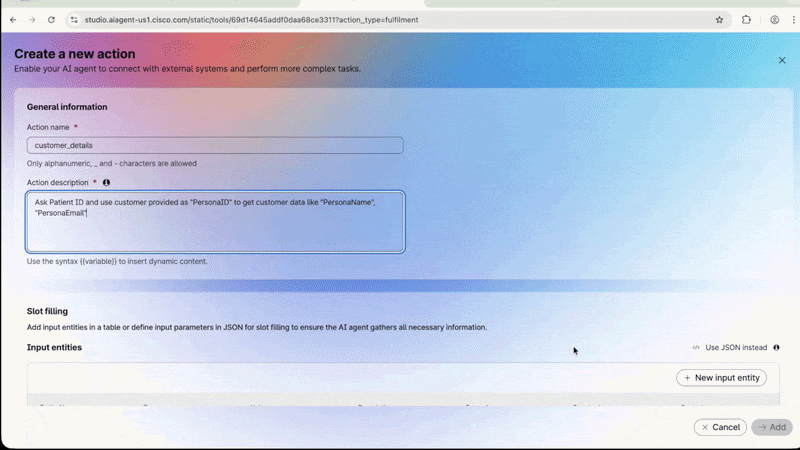
{kind=link}
{kind=link}
2.6 Import the create_appointment Flow
Due to time constraints, we will import the remaining action flow from an existing template.
-
Navigate to the Webex Connect tab. Find the Service ADMIN_LTRCCT2001_CUMULUS and click to enter it.
Do NOT modify anything inside this service
This service is shared across all students. Only Export the flow — do not change any configuration.
-
Navigate to Flows inside ADMIN_LTRCCT2001_CUMULUS. Find the flow UseCase1_AIAgent_create_appointment, click on the Actions arrow and choose Export. Download the JSON file to your computer.
See how to export the flow
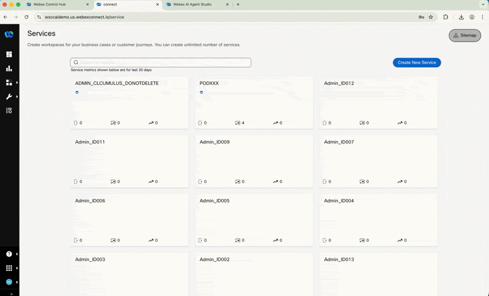
-
Go back to Services and find your Service named PodXXX_LTRCCT2001_CUMULUS. Enter it, navigate to Flows, and click Create Flow.
-
Fill in the name
UseCase1_AIAgent_create_appointment, select "Upload a flow" from "Method" and select the .workflow file you just exported to import it. Click Create. -
Wait until the flow opens. Click Parse and Save on the first node.
See how to import the flow
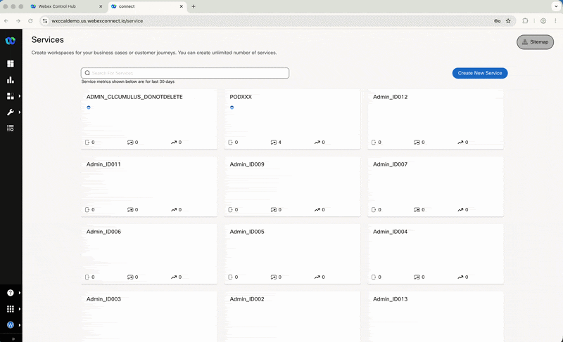
Flow Architecture — What's Inside?
Take a moment to explore the nodes but do NOT change anything:
Node Function Node 1 Data passed by AI Agent to this flow Node 2 Airtable POST that creates the scheduling / appointment Remaining nodes Send SMS confirmation based on customer language -
Double-click each SMS node, select
CONNCTfrom the From Number dropdown, and click Save. Repeat this for all 4 SMS nodes in the flow.See how to import the flow
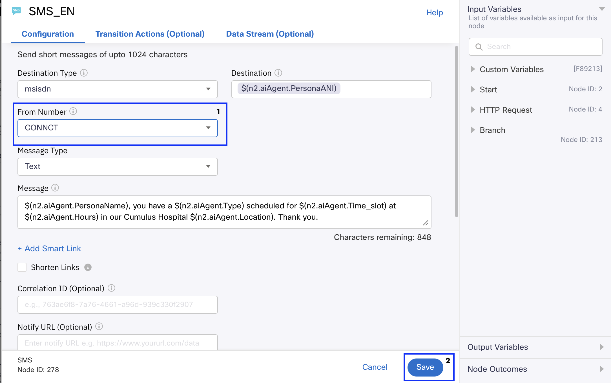
-
Click Make Live to publish your flow.
{kind=link}
{kind=link}
{kind=link}
2.7 Create the create_appointment Action in AI Agent Studio
-
Navigate back to the Webex AI Agent Studio tab. Go to Actions and click + Add actions. Select Fulfillment from the Create new action option.
Critical — Use Exact Names
Use exactly the action name and entity names specified below.
-
Fill in the fields as follows:
Field Value Action Name create_appointment Action Description Create an appointment for the patient using "PersonaID" value , "PersonaName" value at the preferred day and time chosen by the patient. Yo got "PersonaName" from previous action [customer_details]. You must convert the date provided by the patient in the following format prior to executing the action: YYYY-MM-DD -
Click + New input entity for each entity below:
use the arrow > to navigate from Entity 1 to Entity 8:Field Value Entity Name PersonaID Entity Type String Entity Description 3-digit customer ID / Patient ID to be used as "PersonaID" Setting ✅ Required See Example - Entity 1: PersonaID
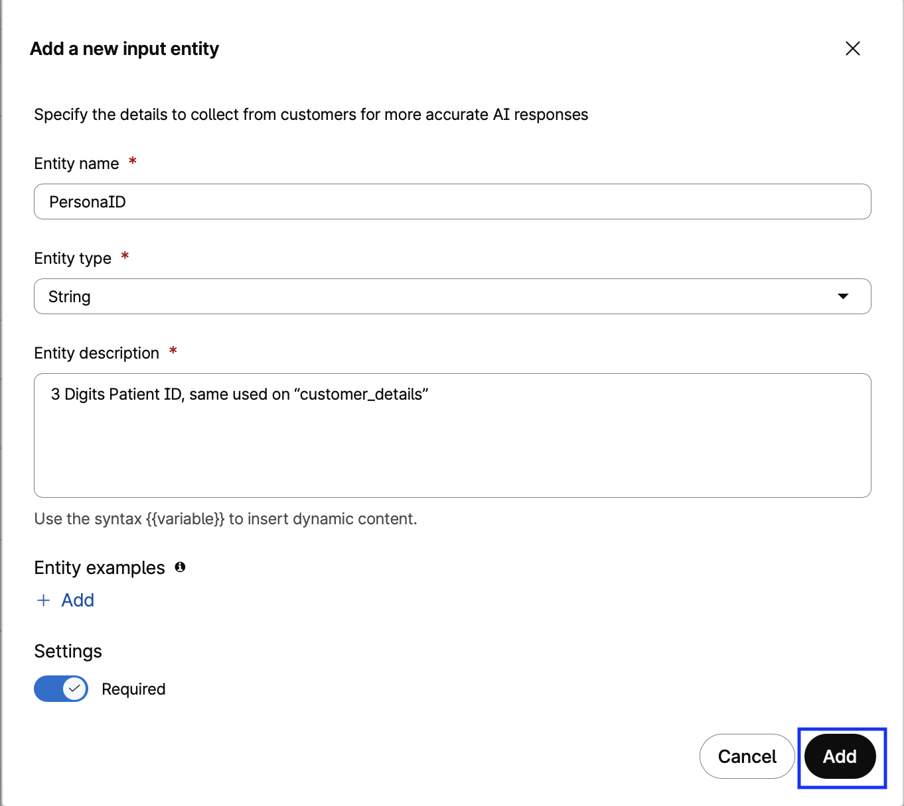
Field Value Entity Name PersonaName Entity Type String Entity Description This is the Patient name — use "PersonaName" value you got from action customer_details Setting ✅ Required See Example - Entity 2: PersonaName
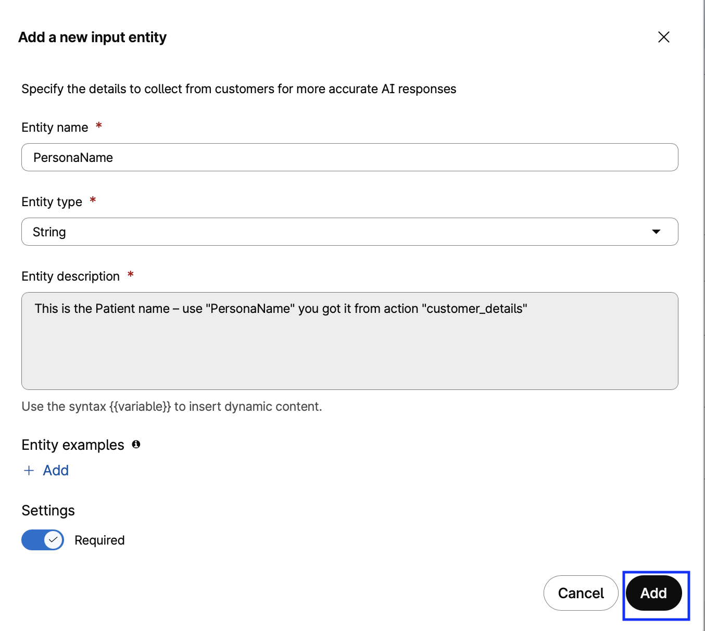
Field Value Entity Name Hours Entity Type String Entity Description Time for the scheduling meeting chosen by the customer Setting ✅ Required See Example - Entity 3: Hours
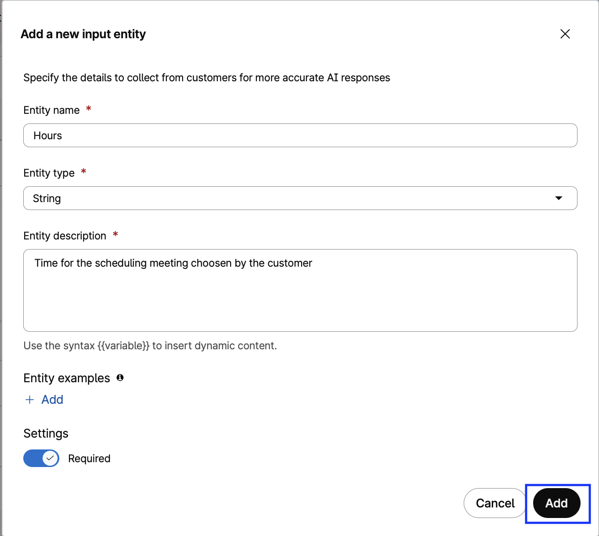
Field Value Entity Name Time_slot Entity Type Date Entity Description Date for the appointment chosen by the customer. Use the format YYYY-MM-DD Value YYYY-mm-dd Setting ✅ Required See Example - Entity 4: Time_slot
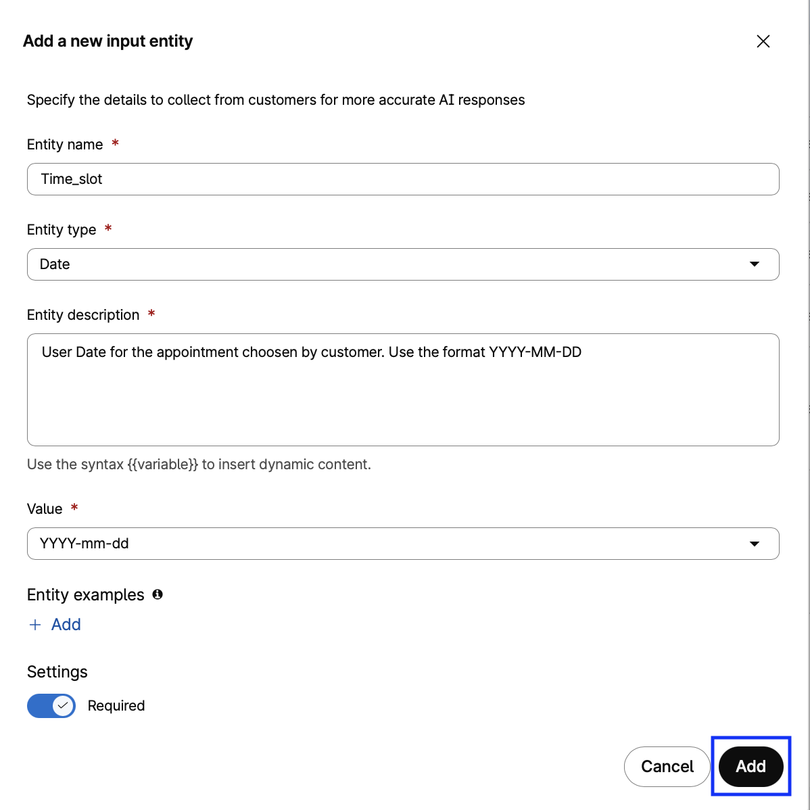
Field Value Entity Name Type Entity Type String Entity Description Type of scheduling service desired by the patient that is offered by Cumulus Hospital. Consult KB to double check type and offer the location accordingly. Setting ✅ Required See Example - Entity 5: Type
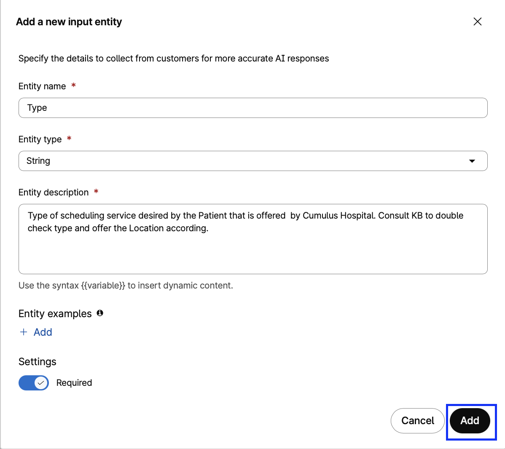
Field Value Entity Name Location Entity Type String Entity Description Hospital location (city and address) where the customer chose to take the medical service. It must match the Cumulus locations and service offers in this location according to the KB. Setting ✅ Required See Example - Entity 6: Location
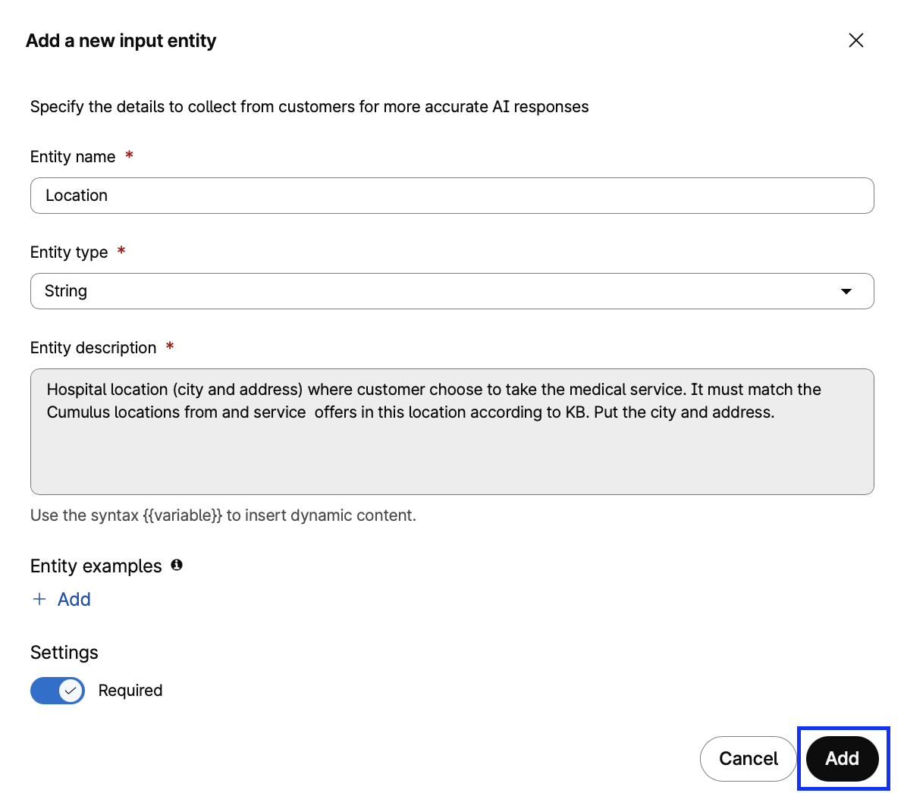
Field Value Entity Name Language Entity Type String Entity Description Global_Language being used by this interaction. Use value {{ Global_Language }}. If you don't have this value, use the language configured in this BOT.Setting ✅ Required See Example - Entity 7: Language
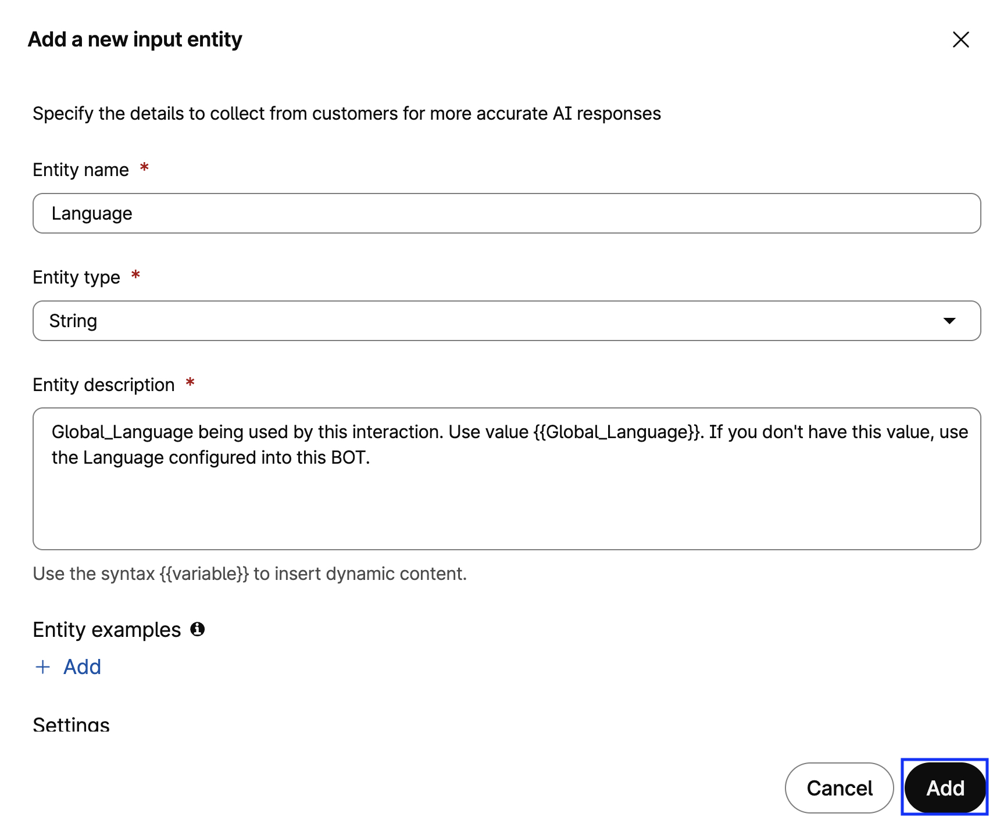
Field Value Entity Name PersonaANI Entity Type String Entity Description Patient ANI to be used for sending SMS confirmation. Use the variable {{ PersonaANI }} you got from the flow, don't ask it to end customer Setting ✅ Required See Example - Entity 8: PersonaANI
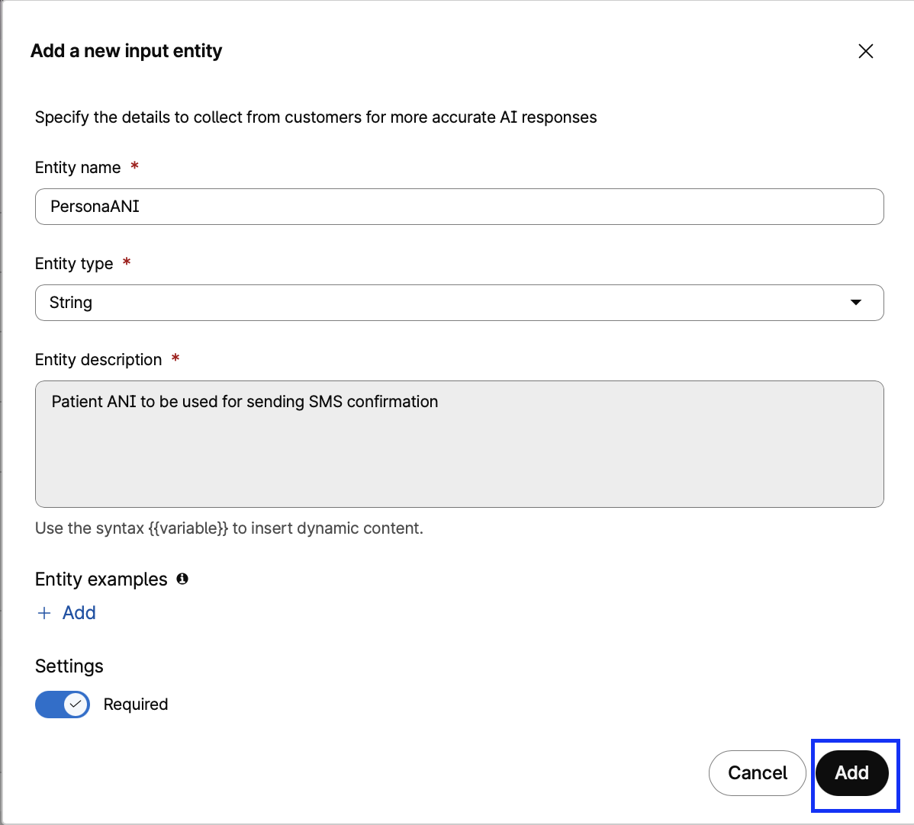
-
In the Fulfillment section, make sure Use Webex Connect Flow Builder is selected and configure as follows:
Field Value Select Service PodXXX_LTRCCT2001_CUMULUS (Replace XXX with your PodID) Select Flow UseCase1_AIAgent_create_appointment Click Add.
{kind=link}
{kind=link}
{kind=link}
{kind=link}
{kind=link}
{kind=link}
{kind=link}
{kind=link}
Save changes
2.8 Test the AI Agent — Full Actions Validation
Before You Begin
Make sure your headset is connected to your computer before starting the preview.
It's TEST time! Click Preview and Start a call.
Inside PodXXX_UseCase1_CumulusScheduler verify the following:
- Identity Capture: The agent performs the
[customer_details]action at the start of every interaction. - Location & Services: The agent consults the KB to offer correct locations for the requested specialty.
- Facilities: The agent answers questions about hospital facilities.
- Preparation Information: The agent provides preparation instructions for procedures.
- Date & Time Validation: The agent only accepts weekdays in June 2026, between 8am and 6pm.
- Appointment Creation: The agent creates the appointment and confirms the details
using
[create_appointment]. - SMS Confirmation: If calling from a valid cell phone, an SMS confirmation is received.
- Language Consistency: The entire interaction follows the configured language.
Need help? See the full test script — English
| Role | Message |
|---|---|
| 🤖 Prompt | Welcome to Cumulus Hospital. How can I help you today? |
| 👤 User | I need to schedule an appointment |
| 🤖 Prompt | (Agent performs customer_details action — asks for Patient ID) |
| 👤 User | My ID is 001 |
| 🤖 Prompt | Hello [PatientName], what type of medical specialty are you looking for? |
| 👤 User | I need a cardiologist |
| 🤖 Prompt | (Agent consults KB and offers available locations for cardiology) |
| 👤 User | New York |
| 🤖 Prompt | What date and time would you prefer? |
| 👤 User | June 10th at 10am |
| 🤖 Prompt | (Agent creates appointment and confirms SMS will be sent) |
| 👤 User | Do you provide parking at the hospital? |
| 🤖 Prompt | Yes, Cumulus Hospital in New York offers paid parking for patients. The cost is twenty dollars per hour, or one hundred fifty dollars for a twenty-four hour period. Is there anything else I can assist you with? |
| 👤 User | What is the preparation for the appointment? |
| 🤖 Prompt | he general preparation guidelines for your appointment:..... |
Important
After testing, Publish your AI Agent with comment V2, so we can proceed to Task 3 and test it with a real live call.
Session Inspection: Click on Sessions and select the transaction you just made to open the transcription window. When finished, close the session window and return to the Configuration tab of your AI Agent.
See how it works
{kind=link}
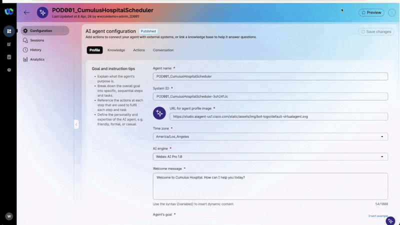
Do you want to try in Spanish? See the full test script
Once you've switched the language to Spanish en-US, go ahead and update the welcome message to:
```
Gracias por llamar al hospital Cumulus, ¿cómo te ayudo hoy?
```
| Role | Use | Message |
|---|---|---|
| 👤 **User** | Location | ¿Cuáles son las ubicaciones del hospital? |
| 👤 **User** | Services | ¿Qué servicios tenemos en la ubicación de Nueva York? |
| 👤 **User** | Facilities | ¿Ofrecen estacionamiento en el hospital? |
| 👤 **User** | Preparation | ¿Cuál es la preparación para un análisis de sangre? |
| 👤 **User** | Specialty | ¿Qué ubicaciones ofrecen un cardiólogo? |
Phase 3: Voice Flow Configuration
3.1 Export & Import the Voice Flow
-
Navigate to Collaboration Control Hub > Contact Center > Flows.
-
Find the flow ADMIN_TEMPLATE_UseCase1_CumulusScheduling, click on the dots on the right and select Export to save the JSON file to your computer.
See how to export the Voice Flow
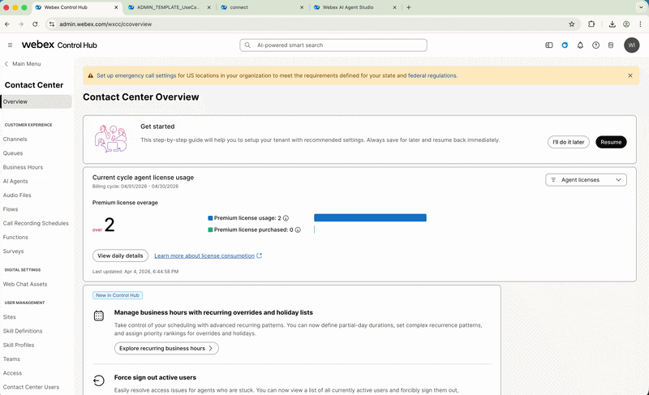
-
In Collaboration Control Hub > Flows, click Manage Flows, then Create Flows from the dropdown menu.
-
In the new window, choose Import Flow and select the JSON file from the previous step. Click Next.
-
Give the unique name
PodXXX_UseCase1Cumulusto this flow (Replace XXX with your PodID) and click Create Flow. -
The new flow window will open. Click Get Started to begin editing.
See how to import the Voice Flow
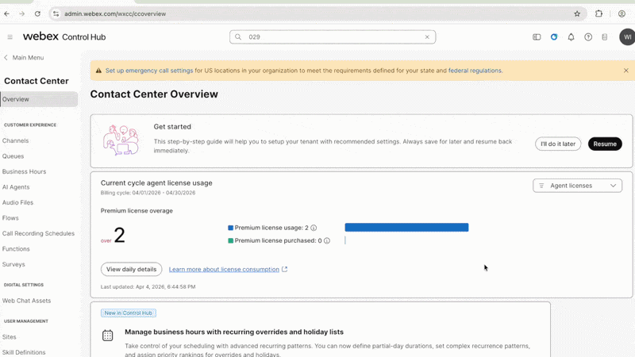
{kind=link}
{kind=link}
3.2 Edit the Voice Flow
- Verify Edit Mode is ON on the top toolbar.
You're Testing Something New! 🚀
In this flow, you have access to a new autonomous model (beta).
This is the AI Agent node named "Concierge" — when you place your test call, the Concierge will answer and handle the interaction autonomously.
No manual routing rules needed — it will:
- 🌐 Automatically detect the customer's language
- 🔀 Route the interaction based on the request and detected language
- Find the node VirtualAgent_UseCase1Cumulus and click on it to edit.
Important – Correct Node Selection
Select the Virtual Agent node on the right side of the flow.
❌ Do not modify the Concierge node — they look similar but serve different purposes.
-
In the Virtual Agent dropdown, select your Autonomous AI Agent:
Field Value Virtual Agent PodXXX_UseCase1_CumulusScheduler -
In the State Event section, open the dropdown and fill in the Event Data field with the following JSON:
{'WelcomeMsg': '{{WelcomeMsg}}', 'PersonaANI': '{{PersonaANI}}', 'Global_Language': '{{Global_Language}}'}Why Are We Passing These Variables?
Variable Purpose WelcomeMsgPasses the welcome message from the flow to the AI Agent PersonaANIPasses the caller's phone number for SMS confirmation Global_LanguagePasses the language selected by the patient in the IVR See how to edit the Voice Flow
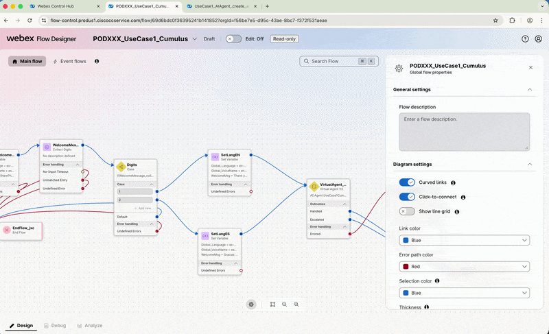
-
Toggle Validation to ON to ensure no configuration errors exist.
-
Click Publish. Ensure the version label is set to latest, then click Publish flow.
{kind=link}
3.3 Configure the Channel
-
In Collaboration Control Hub > Contact Center, find Channels.
-
Find your Channel PodXXX_Cumulus_Voice and click to edit. Configure as follows:
Field Value Routing Flow PodXXX_UseCase1Cumulus Music on Hold defaultmusic_on_hold.wav Version Label Latest Click Save.
See how to configure the Channel
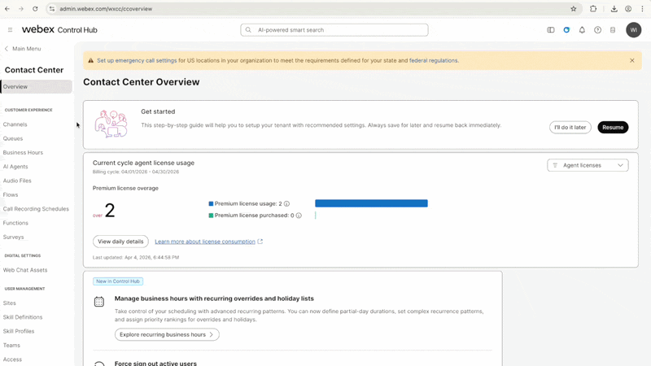
{kind=link}
3.4 Update the Welcome Message
-
Navigate back to the AI Agent Studio tab and click on your AI Agent to open its configuration.
-
In the Profile tab, update the Welcome Message field:
copy and paste the complete value:Field Value Welcome Message {{WelcomeMsg}} -
Click Save Changes, then click Publish. Add a comment
V3and click Publish again.See how to update the Welcome Message
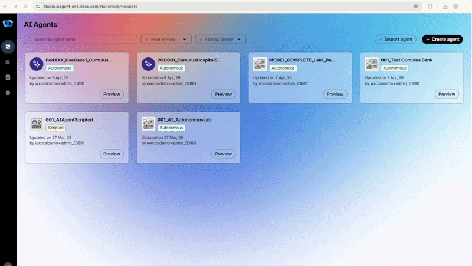
{kind=link}
Phase 4: Live Call Testing
4.1 English Path Validation
Step 1 — Initiate Call
Dial your assigned Channel number from your mobile device or Webex App. (you can find it under the lab access instructions).
🔗 You can use your cell phone or log in to the Webex App using the supervior user assigned to your POD to make the call.
Note: For detailed guidance, refer to the Getting Started section.
Step 2 — Language Selection
When the concierge prompts for language, answer I´m ok with English.
Step 3 — Triage Interaction
Test Script — English
- Provide your Patient ID when asked (e.g., 001) - (you can find it under the lab access instructions).
- Request an appointment: "I need to schedule an appointment with a cardiologist"
- Choose your preferred location from the options provided by the AI Agent
- Select a date: Any weekday in June 2026, between 8am and 6pm**
- Confirm the appointment details
- (If calling from a valid cell phone) → Verify the SMS confirmation is received ✅
Need help? See the full test script — English
| Role | Message |
|---|---|
| 🤖 Prompt | Welcome to Cumulus Hospital. How can I help you today? |
| 👤 User | I need to schedule an appointment |
| 🤖 Prompt | (Agent performs customer_details action — asks for Patient ID) |
| 👤 User | My ID is 001 |
| 🤖 Prompt | Hello [PatientName], what type of medical specialty are you looking for? |
| 👤 User | I need a cardiologist |
| 🤖 Prompt | (Agent consults KB and offers available locations for cardiology) |
| 👤 User | New York |
| 🤖 Prompt | What date and time would you prefer? |
| 👤 User | June 10th at 10am |
| 🤖 Prompt | (Agent creates appointment and confirms SMS will be sent) |
4.2 Spanish Path Validation
Step 1 — Initiate Call
Dial your assigned Channel number from your mobile device or Webex App. (you can find it under the lab access instructions).
Step 2 — Language Selection
When the concierge prompts for language, answer Quiero hablar en español.
Step 3 — Triage Interaction (Spanish)
Test Script — Spanish
- Provide your Patient ID - ID De Paciente when asked (e.g., 001)
- Request an appointment: "Necesito agendar una cita con un cardiólogo"
- Choose your preferred location from the options provided by the AI Agent
- Select a date: Any weekday in June 2026, between 8am and 6pm**
- Confirm the appointment details
- (If calling from a valid cell phone) → Verify the SMS confirmation is received in Spanish ✅
Need help? See the full test script — Spanish
| Role | Message |
|---|---|
| 🤖 Prompt | Bienvenido a Cumulus Hospital. ¿En qué puedo ayudarle hoy? |
| 👤 User | Necesito agendar una cita |
| 🤖 Prompt | (Agent performs customer_details action — asks for Patient ID) |
| 👤 User | Mi ID es 001 |
| 🤖 Prompt | Hola [NombrePaciente], ¿qué tipo de especialidad médica está buscando? |
| 👤 User | Necesito un cardiólogo |
| 🤖 Prompt | (Agent consults KB and offers available locations for cardiology in Spanish) |
| 👤 User | Ciudad de México |
| 🤖 Prompt | ¿Qué fecha y hora prefiere? |
| 👤 User | 10 de junio a las 10am |
| 🤖 Prompt | (Agent creates appointment and confirms SMS will be sent in Spanish) |
🏁 Lab 1 Complete — Congratulations! 🎉
You have successfully completed Lab 1 — Orchestrating Multilingual Voice AI.
| Component | Status |
|---|---|
| Autonomous AI Agent | Created from scratch in AI Agent Studio |
| Knowledge Base | Uploaded, processed and associated to AI Agent |
customer_details Action |
Flow created in Webex Connect and linked to AI Agent |
create_appointment Action |
Flow imported, published and linked to AI Agent |
| Voice Flow | Imported, configured and published with multilingual support |
| Channel Configuration | Routing flow mapped to your assigned DID |
| Welcome Message | Updated to use dynamic variable from Voice Flow |
| End-to-End Testing (EN + ES) | All scenarios validated — KB, scheduling & SMS confirmation |
Lab authored for Cisco Live 2026